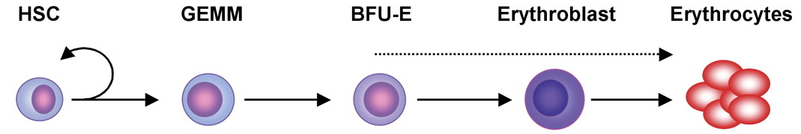

Modéliser l'érythropoïèse à l'aide d'équations différentielles à retard
Crauste et al.
L'érythropoïèse parmi l'hématopoïèse
 Cell Research, 2011
Cell Research, 2011
Auto-renouvellement des progéniteurs ?
Blood, 2007
HSC : Hematopoietic Stem Cell
BFU-E : Burst Forming Unit Erythroid
Qui se divise ?
- 200 milliards d'érythrocytes produits par jour chez l'homme
- Division des cellules souches hématopoïétique uniquement ?
- Hypothèse : les progéniteurs peuvent également s'autorenouveller
Un modèle compartimenté de l'érythropoïèse

Sous forme d'équation:
$$\frac{\partial{p(t, a)}}{\partial{t}} + \frac{\partial{p(t, a)}}{\partial{a}} = - \beta p(t, a) - \sigma p(t, a)$$
$$\frac{\partial{p_{sr}(t, a)}}{\partial{t}} + \frac{\partial{p_{sr}(t, a)}}{\partial{a}} = - \beta p_{sr}(t, a)$$
$$\frac{\partial{e(t, a)}}{\partial{t}} + \frac{\partial{e(t, a)}}{\partial{a}} = - \gamma e(t, a)$$
avec comme conditions aux limites :
$$p(t, 0) = K + 2 p_{sr}(t, \tau_c)$$ $$p_{sr}(t, 0) = \int_{0}^{\tau_p} \sigma p(t, a) da$$ $$e(t, 0) = A p(t, \tau_p)$$
Densité totale d'érythrocyte et de progéniteur
On définit respectivement \(E(t)\), \(P(t)\) et \(P_{sr}(t)\) comme les densités totales d'érythrocytes, de progéniteurs et de progéniteurs pouvant s'autorenouveller.
$$E(t) = \int_{0}^{+\infty} e(t, a) da$$ $$P(t) = \int_{0}^{\tau_p} p(t, a) da$$ $$P_{sr}(t) = \int_{0}^{\tau_c} p_{sr}(t, a) da$$
Rétrocontrôles positif et négatif
Une augmentation de la densité des érythrocytes stimule l'apoptose des progéniteurs et inhibe leur l'auto-renouvellement.
$$\beta = \beta(E(t)) \textrm{ (taux d'apoptose des progéniteurs)}$$ $$\sigma = \sigma(E(t)) \textrm{ (taux de prolifération des progéniteurs)}$$
Simulations sans auto-renouvellement des progéniteurs

$$\beta = \beta_{\infty} \frac{E(t)^n}{E(t)^n + \bar{\beta}^n}$$
Points forts et limites du modèle
- Nombre de paramètres raisonnable (11)
- Rétrocontrôles du nombre d'érythrocyte sur le nombre de progéniteurs
- Bonne adéquation simulations/expériences